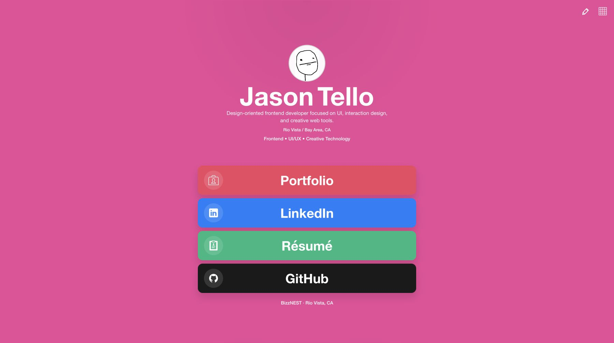
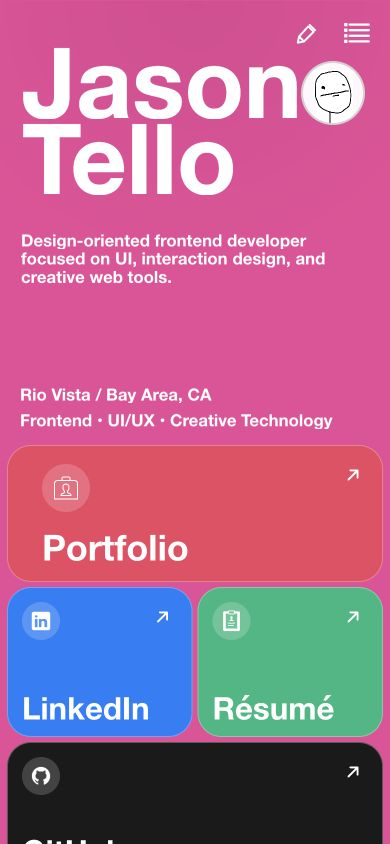

Live edit mode
Profile text, link content, colors, and the profile image can be edited directly against the page preview.
Brief / constraints
I treated the custom feature as the center of the experience: an edit mode that lets someone shape the page while seeing the result in place. The core profile, links, layout, and controls all needed to remain usable across desktop and mobile.
This is a front-end prototype rather than a multi-user publishing platform. Changes save to local browser storage, so there are no accounts, backend database, public sharing controls, or cross-device sync.
Objective
The main design problem was not simply displaying four links. It was creating an editing model that stayed understandable while the page changed shape, content grew, optional text disappeared, and links moved between positions.
I kept the public page and editor connected so users could make a change, judge it in context, and return to the finished view without switching to a separate settings screen.
Interaction decisions
Profile text, link content, colors, and the profile image can be edited directly against the page preview.
Bento-grid and list views use the same underlying link data while adapting hierarchy and spacing.
Name, description, location, and role can be resized, edited, or hidden without rebuilding the page.
Links can be edited and rearranged through drag-and-drop or keyboard controls, with visible focus feedback.
Responsive design / accessibility / QA


I checked both layouts at narrow mobile, breakpoint, laptop, and wide-desktop widths. Edge-case testing covered long copy, maximum text sizing, hidden optional lines, overflow, mode switching, popup placement, and reorder behavior.
Editable profile rows support keyboard activation, focus returns after the editor closes, sliders expose percentage values, and hidden preview copy is removed from the accessibility tree. This was targeted interaction testing rather than a full WCAG conformance review; dedicated screen-reader and browser-zoom testing would still be needed.
Implementation
I built the application with React and plain CSS, using Motion for interface transitions. A shared link model powers both layout modes, and localStorage preserves profile, color, order, and layout choices in the same browser.
Automated browser checks cover reordering, profile-text editing, keyboard entry, focus handoff, slider semantics, responsive hide/show behavior, and key layout breakpoints. Manual visual checks were used alongside those tests to catch spacing and overlap issues.
AI-assisted process
I used Codex as an implementation and QA collaborator to translate interaction requirements into React and CSS, investigate edge cases, and expand automated checks. I owned the interpretation of the brief, visual and interaction direction, feature priorities, acceptance criteria, code review, and final product decisions.
Outcome / reflection